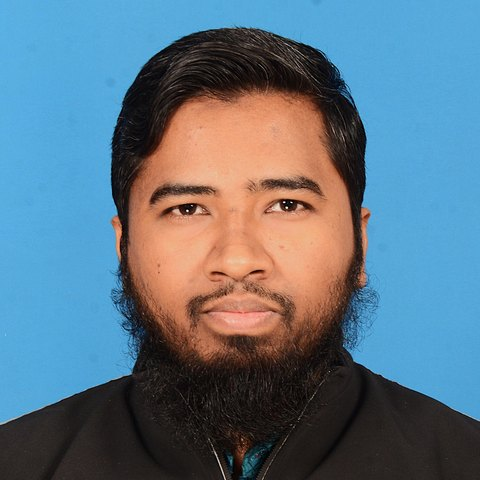

I am a Ph.D. researcher in the Department of Electrical and Computer Engineering at Clarkson University, advised by Prof. Leo Yazhou Jiang.
My research develops optimization and control methods that make battery energy storage dependable on real distribution grids. My dissertation builds a distributionally robust day-ahead battery dispatch for a New York distribution feeder. It couples probabilistic load forecasting, weather-driven outage prediction and transformer thermal aging, so the battery can shave peaks while holding a reserve for outages. A parallel, utility-funded project values battery storage across generation, sub-transmission and distribution benefits.
Before Clarkson, I spent more than seven years as a Lecturer in Electrical, Electronic and Communication Engineering at the Military Institute of Science and Technology (MIST), Bangladesh. There I published on frequency stability of low-inertia grids, inverter control, power quality and renewable integration.
Education
- Ph.D., Electrical and Computer Engineering, Clarkson University2025 – presentCGPA 4.00 / 4.00
- M.Sc., Electrical and Electronic Engineering, Bangladesh University of Engineering and Technology2019 – 2023Thesis: adaptive BESS controller for frequency stability of a low-inertia grid · CGPA 3.83 / 4.00
- B.Sc., Electrical, Electronic and Communication Engineering, Military Institute of Science and Technology2014 – 20171st of 125 · MIST Medal · CGPA 3.95 / 4.00
Research interests
Battery energy storage dispatch and sizing · Distributionally robust and stochastic optimization · Probabilistic load and outage forecasting · Frequency and small-signal stability of low-inertia grids · Power quality and power electronics · Benefit-cost analysis of grid assets
Contact information
- Emailmhasa@clarkson.edu
- AddressDepartment of Electrical and Computer Engineering, Clarkson University, Potsdam, NY 13699
- Google Scholarscholar.google.com/citations?user=XFqFOx0AAAAJ
- LinkedInlinkedin.com/in/md-mahadi-hasan-48b8a4391
- GitHubgithub.com/mahadimist
- MIST profilemist.ac.bd faculty page

Publications (peer-reviewed)
Reverse chronological order. My name is in bold. Each entry ends with its main reported result.
Journal articles and book chapter
Conference proceedings (IEEE)
Work in progress
- “Joint load–outage scenario-based robust stochastic optimization of day-ahead BESS dispatch for peak shaving and resilience.” With L. Y. Jiang. In preparation
Wasserstein distributionally robust dispatch with LightGBM quantile load forecasts, a two-stage outage prediction model and IEEE C57.91 transformer aging; Stephentown feeder, NYISO Capital zone. - “Multi-year BESS sizing under uncertainty with endogenous degradation.” With L. Y. Jiang. Ongoing
Funded projects
- Avangrid (2025 – present). “Benefit-cost analysis framework for utility-scale battery energy storage.” Four value-stream modules: generation, sub-transmission, distribution and short-lead-time benefit.
Teaching
I taught undergraduate electrical engineering for more than seven years at MIST, typically to 100+ students per term, and served as course coordinator and academic advisor to 60+ students. I also taught as an adjunct lecturer at three other Bangladeshi universities.
Courses taught (MIST, 2018 – 2025)
- Power System Analysis. (Undergraduate, MIST) Load flow, symmetrical components, fault analysis and stability of interconnected power systems.
- Power Plant Engineering. (Undergraduate, MIST) Thermal, hydro, nuclear and renewable generation; load curves, plant economics and tariff structures.
- Power Electronics. (Undergraduate, MIST) Rectifiers, choppers, inverters and AC controllers, with emphasis on harmonics and power quality.
- Energy Conversion I & II. (Undergraduate, MIST) Transformers, induction, synchronous and DC machines; performance and control.
- Basic Electrical Circuits I & II. (Undergraduate, MIST) DC and AC circuit analysis, network theorems, transients and three-phase systems.
- Electric Service Design. (Undergraduate, MIST) Design of building electrical services: wiring, protection, lighting and substation layout, drawn in AutoCAD.
Appointments
- 2018 – 2025Lecturer, Dept. of EECE, Military Institute of Science and Technology
- 2024 – 2025Adjunct Lecturer, Bangladesh University of Professionals
- 2024 – 2025Adjunct Lecturer, East West University (Fall 2024, Spring 2025)
- 2022 – 2024Adjunct Lecturer, University of Asia Pacific (Fall 2022 – Spring 2023; Jul 2023 – Jun 2024)
- 2018Adjunct Lecturer, Northern University Bangladesh
Workshops delivered
- 2024Two-day workshop, Advanced AutoCAD for Electrical Systems Design, IEEE UAP Student Branch
- 2023Day-long workshop, AutoCAD for Electrical Services Design, University of Asia Pacific
Industry consultancy
Electrical consultant, Centre for Advisory and Testing Services (CATS), MIST. Acceptance testing of 7.5 MVA and 10 MVA 33/11 kV power transformers and a 3 MVA 11/0.4 kV distribution transformer; industrial energy audit and substation inspection; feasibility studies for the Tangail Economic Zone and the Jolshiri underground distribution system; electrical services design for LGED projects.
Awards and service
- 2017MIST Medal for 1st position among 125 students, B.Sc. Engineering
- 2017Dean's Certificate and Scholarship, B.Sc. Engineering
- 2014 – 16MIST Commandant's Certificate and Scholarship (top 5 of the cohort)
- 20141st Position, Inter-University EEE Olympiad, IEEE Student Branch, MIST
Featured in Kaler Kantho, 13 May 2015 ↗ - 2018, 2024Technical Program and Organizing Committee, ICEEICT, MIST
- MemberIEEE (Graduate Student Member)
- MemberInstitution of Engineers, Bangladesh (IEB), M/44235
Research highlights
Selected results, plotted from the tables of the published papers.
Adaptive Fuzzy-ANFIS controller lets a battery emulate inertia
Li-ion BESS (360 V, 200 Ah) on an 800 V DC link and a 400 V, 50 Hz inverter; tested against a Fuzzy + PI controller under 20 kW load steps and a three-phase fault. MATLAB/Simulink.
Peak |ROCOF| (Hz/ns)
Settling time (ms)
Inverter control and PV penetration in small-signal stability
Modal analysis of the WSCC 3-machine, 9-bus system with a 60 MVA converter at Bus 6. DIgSILENT PowerFactory.
Eigenvalues by control strategy
Mode 14 damping vs PV injection
Hybrid AI control of a unified power quality conditioner
Four SAF / PAF controller pairings under harmonics, sag and swell. MATLAB/Simulink, ANN and ANFIS.
THD during the harmonic event
Net-zero PV for academic buildings in Bangladesh
Optimally sized rooftop PV evaluated under net metering and all-energy buy/sell billing. NREL SAM and Python.
| Building (Dhaka) | PV size | Net positive energy | Real LCOE | CO₂ avoided |
|---|---|---|---|---|
| University | 2620 kWp | 6.18 MWh | 4.36 ¢/kWh | 2026.5 t |
| High school | 25 kW | 4.04 MWh | 5.36 ¢/kWh | 18.9 t |
| Primary school | 12 kW | 3.62 MWh | 5.57 ¢/kWh | 9.7 t |
Software and tools
Tools I have used to produce published results, with the number of papers that used each.
- MATLAB / Simulink8 papersControllers, converters, power quality, DSM, fuel-cell EVs; Fuzzy Logic, ANFIS and ANN toolboxes
- PSCAD / EMTDC2 papersSwitching and fault transient overvoltages
- ETAP2 papersLoad flow, short circuit, transient stability, harmonics
- DIgSILENT PowerFactory1 paperModal analysis with DSL converter models
- NREL System Advisor Model1 paperPV performance and financial modelling
- Python1 paper + Ph.D.Load profiles; LightGBM forecasting and optimization in current work
- HOMER · HelioScope1 paperNet-metering economics and rooftop PV layout
- COMSOL Multiphysics1 paper3D finite-element heat transfer in a GaN HEMT
- OrCAD / PSpice1 paperRectifier harmonic-mitigation circuits
- AutoCAD ElectricalTeachingElectrical services design; workshops delivered